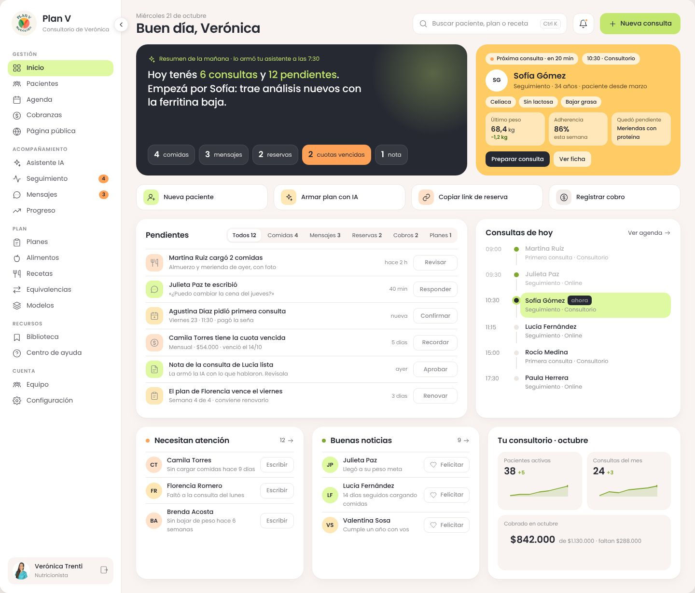
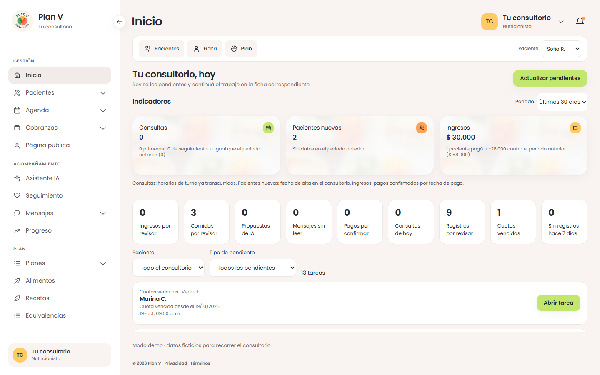

Plan V · base visual del panel
Fase 1: menú, colores, tema y adaptación. El contenido de Inicio y de las demás pantallas se completa en las próximas fases.
Abrir el panel local · Boceto navegable aprobado · Informe completo
3.132 pruebas aprobadas · tipos, compilación y secretos verificados · 22 comprobaciones y 72 medidas de navegador. Datos ficticios de la demostración.
Boceto aprobado: referencia del diseño completo
Fase 1: armazón nuevo con la bandeja actual de Inicio
Pantallas actuales en celular
Ficha y chat en escritorio
La evidencia verifica el armazón de esta fase. En formularios largos el área central se desplaza; la auditoría de accesibilidad global y el rediseño del contenido corresponden a sus próximas fases. La sincronización del tema con una cuenta real no se probó en producción.